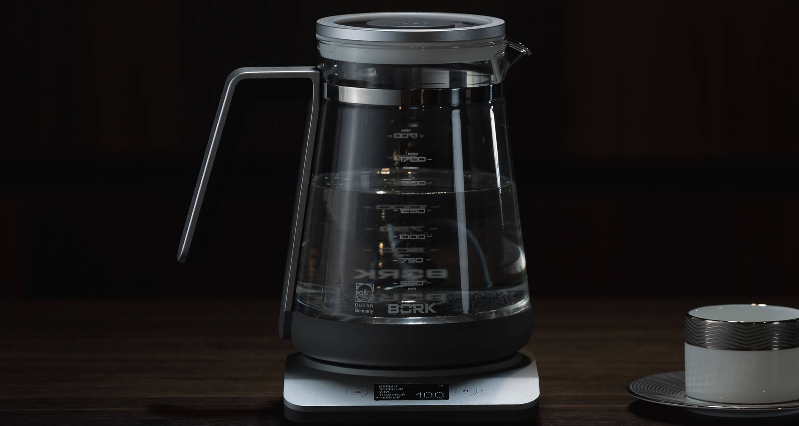

Уход за изделиями из алюминия с анодированным покрытием
Анодированные изделия достаточно стойки к небольшим механическим повреждениям, обладают хорошими диэлектрическими свойствами (электроизоляция).
За анодированными изделиями проще ухаживать в процессе эксплуатации. Они легко очищаются мягкой влажной салфеткой с добавлением моющих средств на гелевой основе, таких как «Mr Muscle», «Fairy» и др. Не рекомендуется использовать в процессе очистки средства с абразивными частицами, (Comet, «Пемолюкс» и т.п.), жесткие губки и проволочные мочалки.
Разрушающее действие на анодированную поверхность оказывают химически агрессивные соединения, щелочные моющие средства, такие как – «Шуманит - антижир», «Cillit Bang - антижир».
Они обладают очень высоким показателем pH и растворяют анодную плёнку.

Твёрдые отложения (накипь) с анодированной поверхности можно удалить при помощи 3% раствора лимонной кислоты:
- 1 чайная ложка на 200 мл. воды.